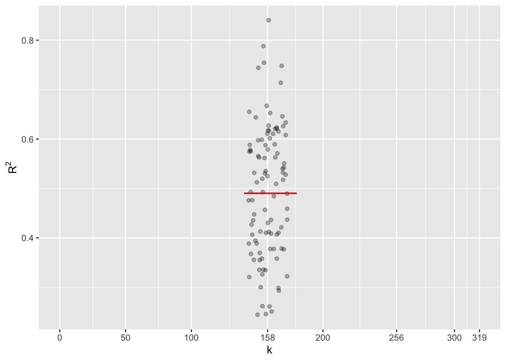
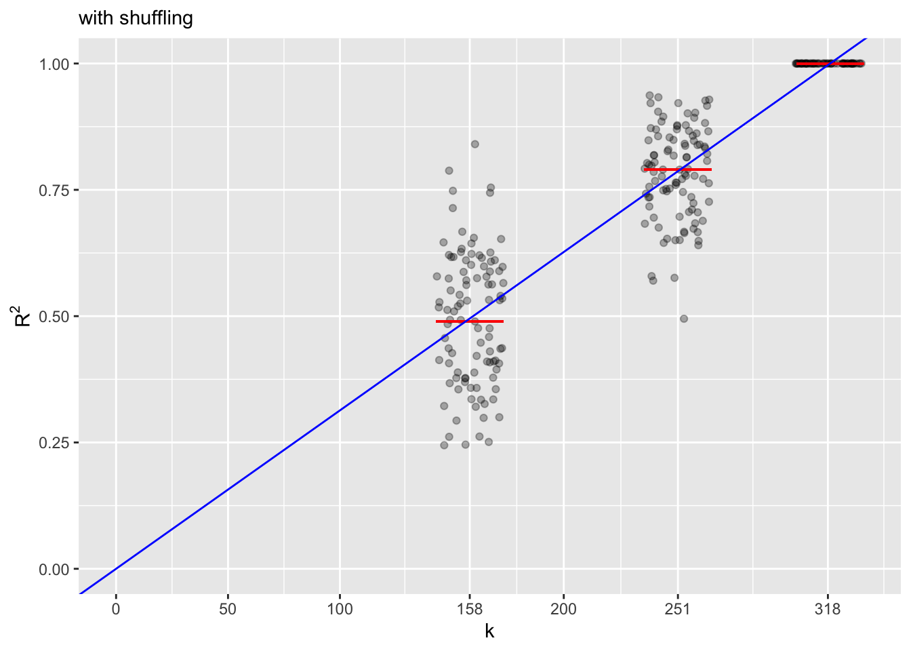

29 Covariates eat variance
In Lesson 28, we introduced covariates to set the relationship between an explanatory variable and the response variable in the correct context. In Lesson 30, we will return to this context-setting role to show that the appropriate choice of covariates to include in a model depends on the modeler’s opinion about the relevant structure of a DAG. Here, we will treat covariates as commodity items to show a surprising property of models. This property is a boon to the modeler, helping to enable sound decisions about whether to include any given covariate. However, it is also a pitfall lieing in wait for the wishful thinker.
How much variation is explained
We start by returning to the definition of statistical thinking introduced at the start of these Lessons:
Statistic thinking is the explanation or description of variation in the context of what remains unexplained or undescribed.
In this Lesson, we will work with a straightforward measure of “what remains unexplained or undescribed.” The fitted model values represent the explained part of the variation. The residuals are what is left over, the difference between the actual values of the response variable and the fitted model values.
As a reminder, we will construct a simple model of the list price of books as a function of the number of pages and whether the book is a paperback or hardcover.1
Price_model <- lm(list_price ~ num_pages + hard_paper,
data = amazon_books)The model_eval() function can extract the fitted model values and the residuals from the model. We show just a few rows here, but we will use the entire report from model_eval(). Remember that when model_eval() is not given input values, it uses the model training data as input.
Results <- model_eval(Price_model)| list_price | num_pages | hard_paper | .output | .resid | .lwr | .upr |
|---|---|---|---|---|---|---|
| 12.95 | 304 | P | 16.60 | -3.65 | -10.73 | 43.94 |
| 15.00 | 273 | P | 15.98 | -0.98 | -11.36 | 43.32 |
| 1.50 | 96 | P | 12.45 | -10.95 | -14.97 | 39.88 |
| 15.99 | 672 | P | 23.95 | -7.96 | -3.57 | 51.47 |
| 30.50 | 720 | P | 24.91 | 5.59 | -2.67 | 52.49 |
| 28.95 | 460 | H | 24.57 | 4.38 | -2.89 | 52.03 |
The first book in the training data is a 304-page paperback with a list price of $12.95. The fitted model value for that book is $16.60. (Ordinarily, we refer to the output of the model function simply as the “output” or the “model output.” However, the output of the model function, when applied to rows from the training data also called the fitted model value.)
At $16.60, the fitted model value is $3.65 higher than the list price. This difference is the residual for that book, the sign reflecting the definition \[\text{residual} \equiv \text{response value} - \text{fitted model value}\ .\] When the residual is small in magnitude, the fitted model value is close to the response value. Conversely, a large residual means the model was way off target for that book.
The standard measure of the typical size of a residual is the standard deviation or, equivalently, the variance.
Results %>% summarize(se_resids = sd(.resid), v_resids=var(.resid)) se_resids v_resids
1 13.81885 190.9606As always, the standard deviation is easier to read because it has sensible units, in this case, dollars. On the other hand, the variance has strange units (square dollars) because it is the square of the standard deviation. We will use the variance for measuring the typical size of a residual for the reasons described in Lesson 20; variances add nicely in a manner analogous to the Pythagorean Theorem.
Similarly, the total amount of variation in the list price is simply the variance of the list price:
Results %>% summarize(v_response = var(list_price)) v_response
1 206.5129A simple measure of how much of the variation in list price remains unexplained is the ratio of these variances \(190.96/206.51 = 92.5\%\). More than 90% of the variation remains unexplained by the Price_model. This high fraction of unexplained variance suggests the model has little to tell us. In the spirit of putting a positive spin on things, statisticians typically work with the complement of the unexplained fraction. Since the unexplained fraction is 92.5%, the complement is 7.5%. This number is written R2 and pronounced “R-squared.” (It also has a formal name: the “coefficient of determination.” In Lesson 30, we will meet the inventor of the coefficient of determination, Sewall Wright, who is an early hero of causal reasoning.)
R2 is such a widely used summary of how the explanatory variables account for the response variable that a software extractor calculates it and some related values.
Price_model %>% R2() n k Rsquared F adjR2
1 317 2 0.07530934 12.78651 0.06941959Many modelers act as if their goal is to build a model that makes R2 as big as possible. Their thinking is that large R2 means that the explanatory variables account for much of the response variable’s variance. Unfortunately, it is a naive goal. Instead, always focus on the model’s suitability for the purpose at hand. Often, shooting for a large R2 imposes costs that can undermine the purpose for the model. Furthermore, even models with the largest possible R2 sometimes have nothing to say about the response variable.
Getting to 1
R2 can range from zero to one. Zero means that the model accounts for none of the variation in the response variable. We can construct such a model quickly enough: list_price ~ 1 has no explanatory variables and, therefore, no ability to distinguish one book from another.
Null_model <- lm(list_price ~ 1, data = amazon_books)
Null_model %>% R2() n k Rsquared F adjR2
1 319 0 0 NaN 0We are using the word “null” to name this model. “Null” is part of the statistics tradition. The dictionary definition of “null” is “having or associated with the value zero” or “lacking distinctive qualities; having no positive substance or content.”2
In the null model, the fitted model values are all the same; all the variation is in the residuals.
Null_model %>% model_eval()| list_price | .output | .resid | .lwr | .upr |
|---|---|---|---|---|
| 12.95 | 18.6 | -5.65 | -9.69 | 46.89 |
| 15.00 | 18.6 | -3.60 | -9.69 | 46.89 |
| 1.50 | 18.6 | -17.10 | -9.69 | 46.89 |
| 15.99 | 18.6 | -2.61 | -9.69 | 46.89 |
| 30.50 | 18.6 | 11.90 | -9.69 | 46.89 |
| 28.95 | 18.6 | 10.35 | -9.69 | 46.89 |
At the other extreme, where R2 = 1, the explanatory variables account for every bit of variation in the response variable. We can try various combinations of explanatory variables to see if we can accomplish this. For example, publisher explains 67% of the variation in list price.
lm(list_price ~ publisher, data = amazon_books) %>% R2() n k Rsquared F adjR2
1 319 158 0.6749786 2.103008 0.3540199We can also check whether author has anything to say about the list price.
lm(list_price ~ author, data = amazon_books) %>% R2() n k Rsquared F adjR2
1 319 250 0.9434046 4.534044 0.7353333Incredible! How about if we use both publisher and author as explanatory variables? We get very close to R2 = 1.
lm(list_price ~ publisher + author, data = amazon_books) %>%
R2() n k Rsquared F adjR2
1 319 281 0.9821609 7.249441 0.84668The modeler discovering this tremendous explanatory power of publisher and author can be forgiven for thinking he or she has found a meaningful explanation. But, unfortunately, the high R2 is an illusion in this case.
To see why, consider another possible explanatory variable, the International Standard Book Number (ISBN). The ISBN is a ten- or thirteen-digit number that marks each book with a unique number.
knitr::include_graphics("www/SM2-ISBN.png")
There is a system behind ISBNs, but despite the “N” standing for “number,” an ISBN is a character string or word (written using only digits). Consequently, the isbn_10 variable in amazon_booksis categorical.
ISBN_model <- lm(list_price ~ isbn_10, data = amazon_books)
ISBN_model %>% R2() n k Rsquared F adjR2
1 319 318 1 NaN NaNThe isbn_10 explains all variation in the list price!
Given that the ISBN is, as we have said, an arbitrary sequence of characters, why does it do such a good job of accounting for the list price? The answer lies not in the content of the ISBN but in another fact: each book has a unique ISBN. As well, each book has a single price. So the ISBN identifies the price of each book. Cleverness is not involved; the list price could be anything, and the ISBN would still identify it precisely. The model coefficients store the whole set of ISBNs and the corresponding set of list prices.
We can substantiate the claim just made—that the list price could be anything at all—by synthesizing a data frame with random list prices:
amazon_books %>%
mutate(random_list_price = rnorm(nrow(.))) %>%
lm(random_list_price ~ isbn_10, data = .) %>%
R2() n k Rsquared F adjR2
1 319 318 1 NaN NaNSimilar randomization can be accomplished by shuffling the isbn_10 column of the data frame so that each ISBN points to a random book. Of course, such shuffling destroys the link between the ISBN and the list price. Even so, the R2 remains high.
lm(list_price ~ shuffle(isbn_10), data=amazon_books) %>% R2() n k Rsquared F adjR2
1 319 318 1 NaN NaNlm(shuffle(list_price) ~ isbn_10, data=amazon_books) %>% R2() n k Rsquared F adjR2
1 319 318 1 NaN NaNStatistical nomenclature is obscure here. So we will make up a name for such incidental alignment with no true explanatory power: the “ISBN-effect.”
Statistical thinkers know to be aware of situations where categorical variables have many levels and check whether the ISBN effect is in play.
The ISBN effect as a benchmark
Shuffling an explanatory variable (while keeping the response variable in the original order) voids any possible explanatory connection between the two. An R2=0, as we get from any model of the form y ~ 1, signals that the 1 cannot account for any variation. However, this does not mean shuffling will lead to R2 = 0. Instead, there is a systematic relationship between the number of model coefficients associated with the shuffled variable, the sample size \(n\), and R2.
We can demonstrate this relationship by conducting many trials of modeling the list_price with a shuffled explanatory variable: either publisher, author, or isbn_10.
The amazon_books data frame has \(n=319\) rows.3 In the next computing chunk, we fit the model list_price ~ publisher and collect the coefficients for counting:
Publisher_model <- lm(list_price ~ shuffle(publisher),
data=amazon_books)
Coefficients <- Publisher_model %>% coefficients() %>% data.frame()
nrow(Coefficients)[1] 159There are 159 coefficients in the model, the first one being the “Intercept.”
Coefficients %>% head()Altogether, there are \(k=158\) coefficients relating to shuffle(publisher).
| value | |
|---|---|
| (Intercept) | 14.95 |
| shuffle(publisher)Adams Media | 0.05 |
| shuffle(publisher)Akashic Books | 13.00 |
| shuffle(publisher)Aladdin | 15.05 |
| shuffle(publisher)Albert Whitman & Company | -0.95 |
| shuffle(publisher)Alfred A. Knopf | 0.05 |
The rule relating R2 to the number of coefficients associated is straightforward for shuffled explanatory variables: R2 will be random with mean value \(\frac{k}{n-1}\). For the shuffle(publisher) model, the mean across many trials will be R2 = 158/324 = 0.49.
Pub_trials <- do(100) * {
lm(list_price ~ shuffle(publisher), data=amazon_books) %>%
R2()
}
list_price ~ shuffled(publisher). The theoretical value \(k/n=160/324=0.49\) is marked in red.:::
We can carry out similar trials for the models list_price ~ shuffle(author) and list_price ~ shuffle(isbn_10), which have \(k=251\) and \(k=319\) respectively.

list_price ~ shuffle(publisher) and ~ shuffle(author) and ~shuffle(isbn_10).The blue diagonal line in Figure 29.3 shows the theoretical average R2 as a function of the number of model coefficients when the explanatory variable is randomized. R2 will always be 1.0 when \(k=n\), that is, when the number of coefficients is the same as the sample size.
Figure 29.3 suggests a way to distinguish between R2 resulting from the ISBN-effect and R2 that shows some true explanatory power: Check if R2 is substantially above the blue diagonal line, that is, check if R2\(\gg \frac{k}{n-1}\) where \(k\) is the number of model coefficients.
The F statistic
\(k\) and \(n\) provide the necessary context for proper interpretation of R2; all three numbers are needed to establish whether R2 \(\gg \frac{k}{n-1}\) to rule out the ISBN effect. The calculation is not difficult; the modeler always knows the size \(n\) of the training data and can find \(k\) as the number of coefficients in the model (not counting the Intercept term).
Perhaps a little easier than interpreting R2 is the interpretation of another statistic, named F, which folds in the \(k\), \(n\), and R2 into a single number: \[F \equiv \frac{n-k-1}{k} \frac{\text{R}^2}{1 - \text{R}^2}\] ?fig-amazon-book-shuffle-F is a remake of Figure 29.3 but using F instead of R2. The blue line, which had the formula R2\(= k/(n-1)\) in Figure 29.3, gets translated to the constant value 1.0 in ?fig-amazon-book-shuffle-F, regardless of \(k\). To decide when a model points to a connection stronger than the ISBN effect, the threshold F \(> 3\) is a good rule of thumb. (Lesson 37 introduces a more precise calculation for the F threshold, which is built into statistical software and presented as a “p-value.”)
ggplot(aes(x=k, y=F), data=All_trials) +
geom_jitter(width=15, alpha=.3) +
geom_abline(aes(intercept=1, slope=0), color="blue") +
geom_point(aes(x=0, y=0), alpha=0) +
labs(subtitle="with shuffling") +
ylab(expression(F)) +
scale_x_continuous(breaks=c(0,50, 100,158,200, 251, 318))Warning: Removed 100 rows containing missing values (geom_point).
Some fields, notably economics, prefer an alternative to F called “adjusted R2” (or \(R^2_\text{adj}\)). The adjustment comes from moving the raw R2 downward and leftward, more-or-less in the direction of the blue line in Figure 29.3. This movement adjusts a raw \(R^2\) that lies on the blue line to \(R^2_\text{adj} = 0\).
We leave the debate on the relative merits of using F or \(R^2_\text{adj}\) their respective boosters. However, before getting wrapped up in such debates, it is worth pointing out that \(R^2_\text{adj}\) is just a rescaling of F.
\[R^2_\text{adj} = 1 - \frac{n-1}{k} \frac{R^2}{F}\ .\]
Comparing models
Modelers are often in the position of having a model that they like but are contemplating adding one or more additional explanatory variables. To illustrate, consider the following models:
- Model 1:
list_price ~ 1 - Model 2:
list_price ~ 1 + hard_paper - Model 3:
list_price ~ 1 + hard_paper + num_pages - Model 4:
list_price ~ 1 + hard_paper + num_pages + weight_oz

All the explanatory variables in the smaller models also apply to the bigger models. Such sets are said to be “nested” in much the same way as for Russian dolls.
For a nested set of models, R2 can never decrease when moving from a smaller model to a larger one—almost always, there is an increase in R2. To demonstrate:
amazon_books <- amazon_books %>%
select(list_price, weight_oz, num_pages, hard_paper) %>%
filter(complete.cases(.))
model1 <- lm(list_price ~ 1, data=amazon_books)
model2 <- lm(list_price ~ 1 + weight_oz, data = amazon_books)
model3 <- lm(list_price ~ 1 + weight_oz + num_pages, data=amazon_books)
model4 <- lm(list_price ~ 1 + weight_oz + num_pages + hard_paper, data=amazon_books)
R2(model1) n k Rsquared F adjR2
1 309 0 0 NaN 0R2(model2) n k Rsquared F adjR2
1 309 1 0.1558551 56.68166 0.1531055R2(model3) n k Rsquared F adjR2
1 309 2 0.1662332 30.50456 0.1607838R2(model4) n k Rsquared F adjR2
1 309 3 0.1697025 20.77941 0.1615357When adding explanatory variables to a model, a good question is whether the new variable(s) add to the ability to account for the variability in the response variable. R2 never goes down when moving from a smaller to a larger model, so we cannot rely on the increase in R2. A valuable technique called “Analysis of Variance” (ANOVA for short) looks at the incremental change in variance explained from a smaller model to a larger one. The increase can be presented as an F statistic. To illustrate:
anova(model1, model2, model3, model4)Analysis of Variance Table
Model 1: list_price ~ 1
Model 2: list_price ~ 1 + weight_oz
Model 3: list_price ~ 1 + weight_oz + num_pages
Model 4: list_price ~ 1 + weight_oz + num_pages + hard_paper
Res.Df RSS Df Sum of Sq F Pr(>F)
1 308 54531
2 307 46032 1 8499.0 57.2516 4.565e-13 ***
3 306 45466 1 565.9 3.8123 0.05179 .
4 305 45277 1 189.2 1.2744 0.25983
---
Signif. codes: 0 '***' 0.001 '**' 0.01 '*' 0.05 '.' 0.1 ' ' 1Focus on the F column of the report. The move from Model 1 to Model 2 produces F=57, well above the threshold described above and clearly indicating that the weight_oz variable accounts for some of the list price. Moving from Model 2 to Model 3 creates a much less impressive F of 3.8. It is as if the added explanatory variable, num_pages, is just barely pulling its own “weight.” Finally, moving from Model 3 to Model 4 produces a below-threshold F of 1.3. In other words, in the context of weight_oz and num_pages, the hard_paper variable does not carry additional information about the list price.
The last column of the report, labeled Pr(>F), translates F into a universal 0 to 1 scale called a p-value. A large F produces a small p-value. The rule of thumb for reading p-values is that a value \(p < 0.05\) indicates that the added variable brings new information about the response variable. We will return to p-values and the controversy they have entailed in Lessons 36 through 38.
If you seek to duplicate the results presented in this chapter, please note that we have deleted six rows from `amazon_books because the rows are either duplicates or have one of the variables missing. The deleted rows are 62, 103, 205, 211, 242, and 303.↩︎
Source: Oxford Languages↩︎
The data frame in the
moderndivepackage has six additional rows, which we have deleted as duplicates or because of missing data.↩︎